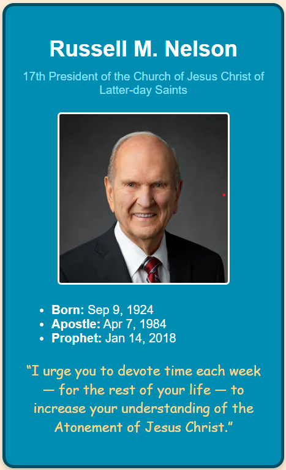
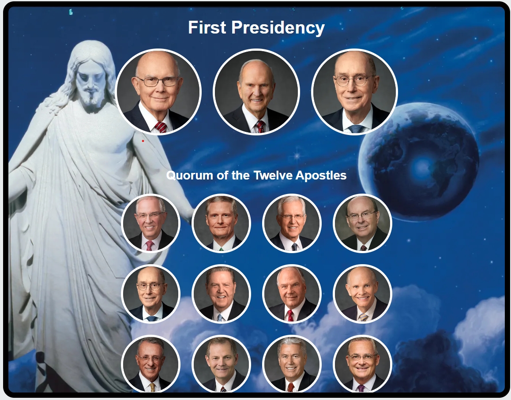
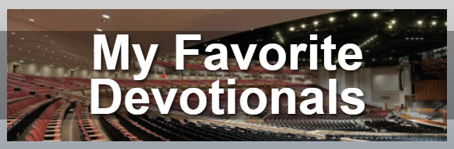
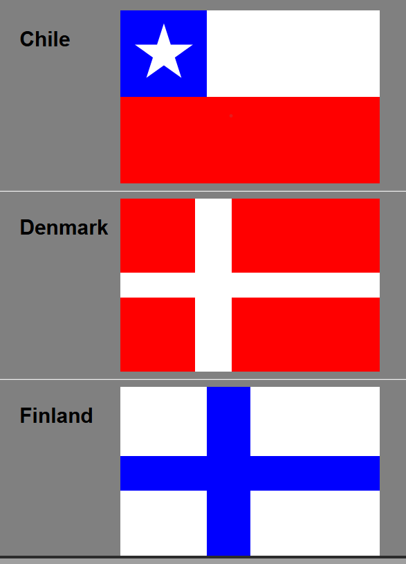
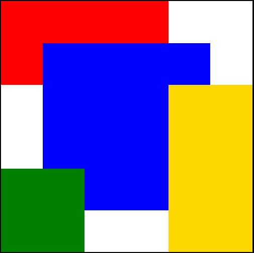
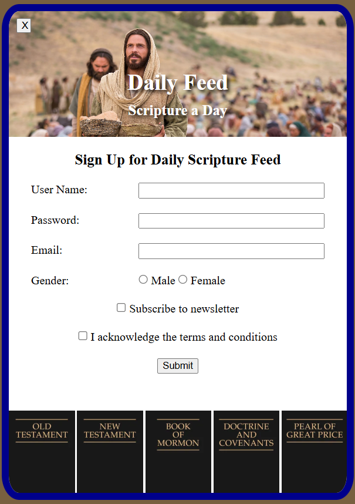

Nelson Card
This was the first ice project. It was to create a simple nametag for our prophet, President Nelson.
Apostle Spotlight
This was the second ice project. It was a small step up, and for it, we needed to create a nametag/board for all of the apostles.
Favorite Devo
This was the third ice project. In this project, we were tasked to create a table with some of our favorite messages from devotionals, and to also make a section where you can add devotionals to the table from the webpage.
Halloween
This was the fourth ice project. In this one, we were given the html and we were not allowed to change it. However, we were allowed to change the css however we wanted. It was a little bit of a competition to see who could make the best page just using css.

Flags
This was the fifth ice project. In this project, we needed to create grids and color each section of the grid a certain color, to make a flag.
Positioning
This was the sixth ice project. In this one, we needed to combine the positioning and grid in one. We were given 4 boxes, and without changing the html, we needed to put the boxes into a certain pattern.
Gallery
This was the seventh ice project. In this project, we were given a page full of pictures that had had a big file size. We needed to use an external site to make the file size smaller, so the page would load faster.

Signup
This was the eighth and final ice project. This project was a mix of all past ice challences. We were given a simple html and javascript doc for a signup sheet. Using what we have learned in this class, we were tasked with making the page look like a given example.
